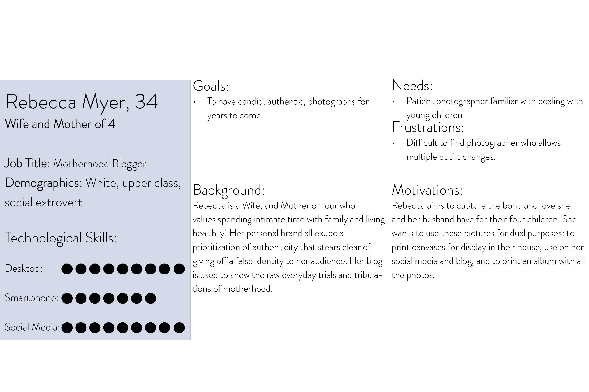
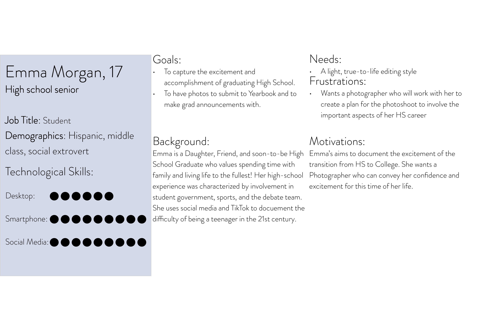

Independent Project
Squarespace Website: Christine Brady Photography, LLC
Overview
I will create a fully functioning Squarespace website for my business, Christine Brady Photography, LLC. Having a website is beneficial because it will make my business look more professional, attract new customers through Google, showcase my services and pricing, display my work and testimonials from clients, and will encourage potential clients to contact me.
I have already purchased an annual Squarespace subscription and a domain name. I will create and design 5 pages: Home, Portfolio, Investment, Behind the Lens, Contact, and Client Galleries. Creating this website is a neccessity for my business as it continues to grow.
I will use skills I have acquired throughout the SMAD program to...
embed HTML code to link to my Pass Gallery (my gallery delivery system)
create a contact form that links to my booking website (Honeybook)
optimize the website and its content for on-site SEO (search engine optimization)
use CSS to add 3 fonts that I have already gotten licenses to, to the website.
Goals:
- Create strategic web copy that highlights my brand's strengths and values. The purpose of this copy is to engage and persuades readers to do business with me.
- To drive traffic to the website through well-thought out on-site search engine optimization using 7-steps.
- To streamline the inquiry process by coding a contact form that will allow prospective clients to contact me easily.
- Aesthetically layout pages that appeal to my ideal client and showcase my photos well.
Audience:
Potential Clients
My target audience is men and women between the ages of 16 and 45 located in Virginia; specifically: Harrisonburg, Cape Charles, and the surrounding areas. My specific niches within portraiture are high school seniors, college graduates, couples, and families.
Current Clients
My current clients will benefit from this website in that it will be where they can find their fully edited, digital galleries and where they can order prints directly from me. They will also be able to contact me directly if they are interested in more photoshoots.


Timeline:
- Project Proposal- Friday, September 10, 2021.
- Wireframes- Friday, September 17, 2021.
- Website Content (copy+imagery)- Friday, September 24, 2021.
- Home and Contact pages- Friday, October 1, 2021.
- Portfolio / Behind the Lens pages- Friday, October 8, 2021.
- Investment page- Thursday, October 15, 2021.
- Client Galleries page- Thursday, October 22, 2021
- Project Final- Friday, October 29, 2021.